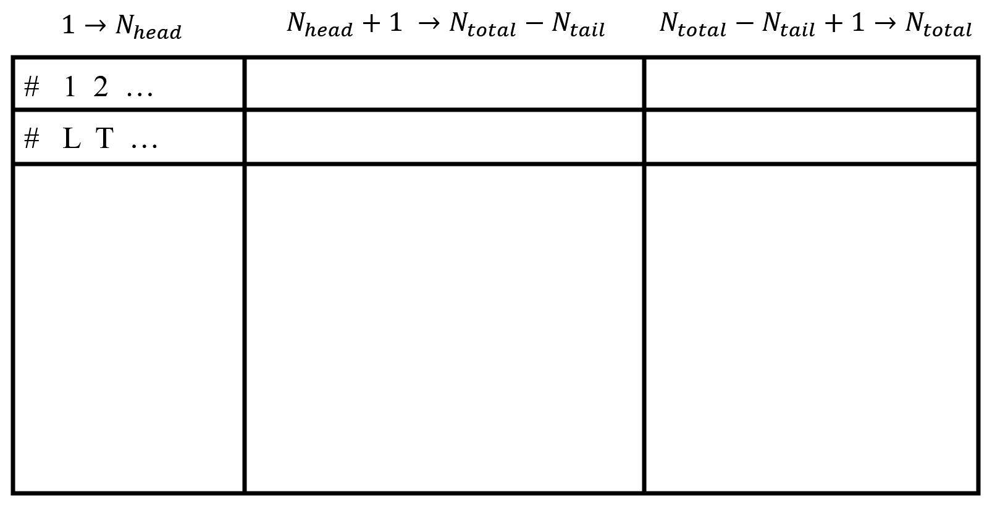

数据处理
当在服务器上或是本地提交完程序之后，经过漫长的等待，得到了一系列待处理的蒙卡数据。 而处理的过程无非包含：
合并->分类->平均->拟合->画图.具体来说，先将所有的数据进行合并，归整在一个文件当中方便传输；之后按照参数区间的不同进行分类，从而得到所需的类别；当然同一参数如果有不同的随机种子的话还要进行种子的平均；如果需要进一步分析，还需进行拟合；最后绘制成展示用的图片。
合并
一种简单直接的方式是将当前目录下的所有输出的数据进行合并打包，这对于均值观测量来说是方便的。对于均值观测量的输出，通常有两种风格：
-
一种是不同行表示不同的观测量，不同列表示观测量的编号、均值、误差、关联等。
-
另一种是不同列表示不同的观测量，一列是均值，一列是误差（或者再加一列是关联），组成交替的结构。
无论是哪种，在合并之后都可以映射为后一种，以方便分类、平均的进行。
而对于分布观测量，通常也需要计算不同的随机种子进行平均，才能得到较好的结果。由于一个特定参数的分布数据，需要占据一整个文件，从而只需归类相同参数但是随机种子不同的文件在一块即可，之后再将相同参数的分布数据进行累加即可。
分类
经过合并之后，通常将数据的形式转化成同一行表示同一参数和随机种子的结果，不同列表示不同的观测量。注意，观测量的前后通常会有指示性质的参量（具体可以参见下一节的图），通常可以简单分为三类： * 描述参数区间，例如：尺寸、温度、相互作用强度、维度、内部自由度 ... * 描述模拟参量，例如：热化次数、采样次数、block大小、随机种子 ... * 其他指示性信息，例如：算法复杂度、测量时间、更新时间 ...
而分类通常是按照"描述参数区间"当中的值进行的，例如在模拟当中有尺寸 $L$、温度 $T$、相互作用强度 $U$、维度 $d$ 这四个量在变化，那么就将这四个参量加入分类队列当中。这四个量可以任选一个放开，固定其余三个。通常将分类得到的文件名，命名为这其余三个固定的参量。
平均
得到了仅有一个参数变化的一系列文件之后，可以很直接地进行平均的操作了。在此之前，我们说明一下文件当中数据的存放结构：  如上图，文件的前两行分别是索引和变量名；整体看分为三大列，第一大列为参数区间等头部的变量，第二大列为通过蒙卡得到的均值、误差等，第三大列为补充的其他提示性的信息。其中需要提前输入确定的量为前缀个数 $N_{head}$，后缀个数 $N_{tail}$ 以及总个数 $N_{total}$.
在进行平均的时候，不仅要照顾到第二大列蒙卡得到的数据，还要设计好其余变量的自洽合理性，尽管它们不是太重要。 具体来说，对于参数区间等描述量平均之后依然是不变化的，对于随机种子可以写成合并了多少数据，对于热化、block数等可以不变化，对于采样数、测量时间等可以累加 ...
而对于第二大列的蒙卡观测量，我们利用如下的公式来处理不同随机种子的数据： $$O_{new} = \frac{\sum_i Q_i \frac{1}{E_i^2}}{\sum_i \frac{1}{E_i^2}}; \quad E_{new} = \frac{1}{\sqrt{\sum_i \frac{1}{E_i^2}}}; \quad bench = \sum_i \frac{(Q_{new}-Q_i)^2}{E_i^2};$$ 其中 $Q_i$ 和 $E_i$ 分别是原始的平均值和误差，而 $Q_{new}$ 和 $E_{new}$ 分别是平均之后的平均值和误差。注意，当 $E_i$ 过小时，需要特殊处理，即说明这组数据不适合平均，只取其中的一个值。另外，$bench$ 用于评测数据拟合的质量，其越接近所平均的随机种子个数，说明拟合的效果可能会越好。
拟合
拟合通常分为两种，即单元函数 $O(L)$ 拟合和二元函数 $O(L,T)$ 拟合。